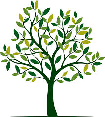

Pour avoir la possiblité de pratiquer un de ces trois métiers plus tard, il y a des spécialités parmis toutes celles proposées qui me seront avantageuses et qui sont recommendées dans ces secteurs. Ces spécialités sont:
Pour devenir procureur de la republique, il faut un bac géneral, c'est pour cette raison que je suis actuellement dans le lycée jay de beaufort.Une fois mon diplome du bac générale obtenu je devrais m'inscrir dans une faculter de droit comme celle de périgueux par exemple pour obtenir un master de droit. Par la suite, je pourrai passer un concours qui me permetra d'integret l'école nationale de la magistrature à Bordeaux, c'est une école trés sélective car c'est la seule école de magistrature en france. Aprés l'obtention du diplome soit environ 31 mois aprés intégration de l'école je pourrai intégret un cabiner d'avocat ou un tribunale.Puis avec le temps mon grade au sein du domaine du droit va évolué
Pour devenir chef de projet événementielle il me faut tout d'abord un bac général. Par la suite, je devrais faire un BTS communication ou un DUT qui sont aventageux pour intégrer ce domaine. Les BTS en communication ou les DUT information-communication permettent de mettre un pied dans le secteur dans des conditions réalistes grace aux stages que je devrais faire. Cela me permettra d'avoir de l'expérience Il est également possible de ce spécialiser dans le domaine qui m'interresse le plus.
Pour commencer, il est nécessaire d'avoir le bac général.Ensuite il y a plusieurs formations qui permette d'acceder a ce metier, comme les écoles d'ingénieurs généralistes avec spécialisation en gestion de l'environnement ou alors un master de droit, mention droit et gestion de l'environnement ce qui serait pour moi la formation la plus adaptée. Ce master dure deux ans. Aprés ce master obtenu je pourrais intergret une entreprise.
CLIQUEZ SUR L'IMAGE